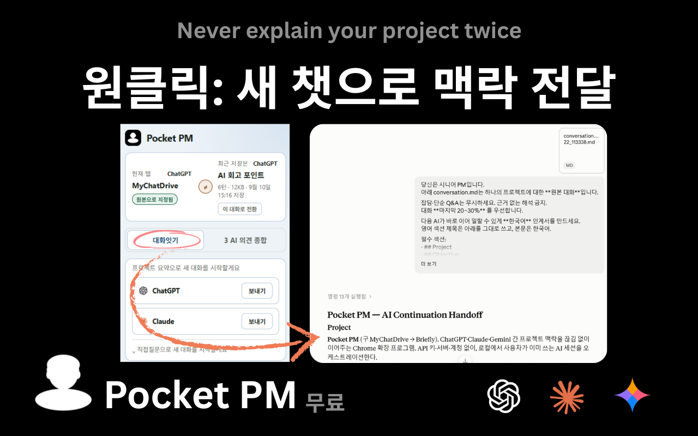
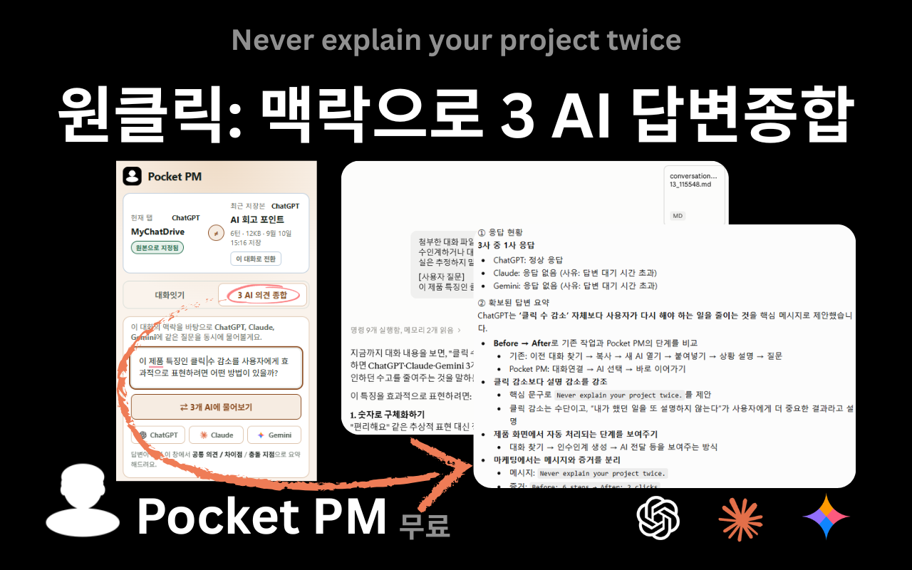

Pocket PM은 지금까지의 대화를 인계서 한 장으로 정리해, 다른 AI로 넘어가도 맥락이 끊기지 않게 해주는 크롬 확장 프로그램입니다.
프로젝트 배경, 그동안의 결정, 지금 막힌 부분 — 다른 AI로 넘어갈 때마다 같은 내용을 다시 타이핑하고 있진 않으셨나요.
잡담과 지나간 논의는 걸러내고, 목표·확정된 결정·현재 진행 중인 작업만 인계서로 뽑아냅니다. 다음 AI는 그 인계서 한 장으로 바로 이어받습니다.
ChatGPT, Claude, Gemini 탭에서 나눈 대화를 확장 프로그램이 자동으로 인식합니다.
이어갈 AI(ChatGPT·Claude)를 고르면 새 채팅을 열고, 대화 파일과 인계서 작성 요청을 자동으로 넣어 보냅니다.
그 AI가 목표·확정된 결정·현재 진행 상태만 골라 인계서 한 장으로 정리하고, 설명 없이 이어서 대화를 진행할 수 있습니다.

같은 질문을 ChatGPT·Claude·Gemini에 동시에 보내고,
세 답변의 공통 의견·차이점·충돌 지점을 정리해 줍니다.

Pocket PM은 로컬 퍼스트로 동작합니다. 어떤 AI API도 대신 호출하지 않고, 계정에 있는 AI 서비스를 그대로 사용합니다.